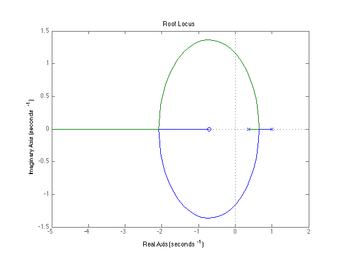

Homework 7
Contents
8.3
Define the Transfer Function of the lead compensator.
numD = [151 -49]; denD = 51*[1.7339 -0.260]; % Define the plant transfer function. numG = [0.368 0.264]; denG = conv([1 -1], [1 -0.368]); % Create closed loop TF. numT = [55.56 21.832 -12.936]; denT = [88.689 -52.4986 36.3299 -8.05632]; % Show the Simulation. dlsim(numT, denT, ones(1,100))
8.30
num = 0.368*[1 0.717]; den = conv([1 -1], [1 -0.368]); T = tf(num, den); rlocus(T);
9.11
syms z;
A = [1 1; 0 1];
B = [.125; .25];
C = [1 0];
G = [0.6322; 0.1548];
Dez = K*(z*eye(2) - A + G*C*A + B*K - G*C*B*K)^-1*G
Dez = (3083177815696723673088*(180143985094819840000*z - 63032728512928657313))/(125*(16225927682921336339157801028812800000000*z^2 - 12771136951168124950929974586213662720000*z + 3619006855460984859011077429508610110567)) + (27710137348652955336704*(90071992547409920000*z - 39377687212675550389))/(625*(16225927682921336339157801028812800000000*z^2 - 12771136951168124950929974586213662720000*z + 3619006855460984859011077429508610110567)) - 2598974389584805178963790840109422214119424/(625*(16225927682921336339157801028812800000000*z^2 - 12771136951168124950929974586213662720000*z + 3619006855460984859011077429508610110567))
9.12
A = [1 1; 0 1]; B = [.125; .25]; C = [1 0]; K = [.3893 1.769]; G = [0.6322; 0.1548]; K*(z*eye(2) - A + G*C*A + B*K - G*C*B*K)^(-1)*G
ans = (3083177815696723673088*(180143985094819840000*z - 63032728512928657313))/(125*(16225927682921336339157801028812800000000*z^2 - 12771136951168124950929974586213662720000*z + 3619006855460984859011077429508610110567)) + (27710137348652955336704*(90071992547409920000*z - 39377687212675550389))/(625*(16225927682921336339157801028812800000000*z^2 - 12771136951168124950929974586213662720000*z + 3619006855460984859011077429508610110567)) - 2598974389584805178963790840109422214119424/(625*(16225927682921336339157801028812800000000*z^2 - 12771136951168124950929974586213662720000*z + 3619006855460984859011077429508610110567))